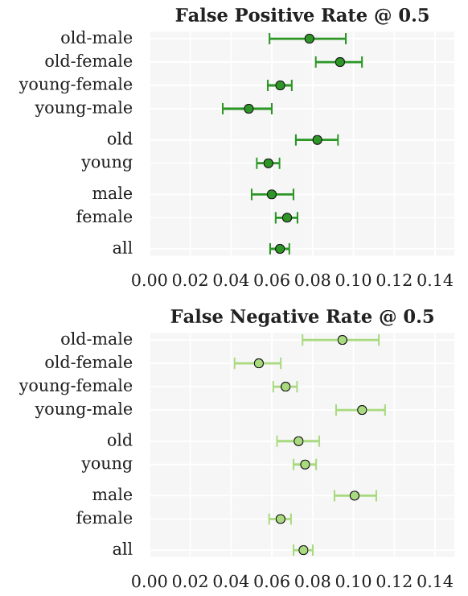
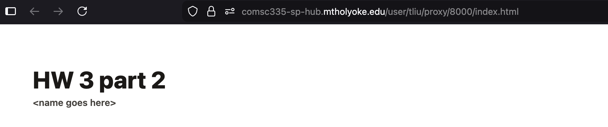

HW 3 part 2#
Ensembling: Predictions
—TODO your name here
Collaboration Statement
TODO brief statement on the nature of your collaboration.
TODO your collaborator’s names here
Part 2 Table of Contents and Rubric#
Section |
Points |
|---|---|
Model Cards for Model Reporting |
1.5 |
End-to-End Prediction and Model Card |
2 |
MyST publishing |
0.5 |
Reflection |
0.5 |
Total |
4.5 pts |
Discussion questions
Whenever a question asks for a discussion, we are not necessarily looking for a particular answer. However, we are looking for engagement with the material, so one-word/one-phrase answers usually don’t give enough space to show your thought process. Try to explain your reasoning in ~1-2 full sentences.
4. Model Cards for Model Reporting [1.5 pts]#
Building off our previous discussions on dataset transparency and fairness concerns when using ML models for decision making, we will now take a similar datasheet reporting approach to the machine learning models we have built.
Mitchell et al. (2019): Model Cards for Model Reporting
Read the Model Cards for Model Reporting paper up through and including Section 4, and review Figure 1 and Figure 2 for examples of model cards, focusing on the “Smiling Detection in Images” model: https://dl.acm.org/doi/epdf/10.1145/3287560.3287596
The paper and model card refer to two additional metrics we haven’t discussed in class that can be derived from confusion matrix counts:
False Discovery Rate (FDR): among all predicted positives, the fraction that are actually false positives:
False Omission Rate (FOR): among all predicted negatives, the fraction that are actually false negatives:
4.1 In HW 1, we discussed how “data is never neutral,” and in HW 2 we examined datasheets as a framework for dataset transparency. In Section 1, the authors describe the relationship between model cards and datasheets. How do model cards complement datasheets? Identify one type of information that a model card captures that a datasheet would not, and briefly discuss why this additional documentation matters.
Your response: TODO
4.2 In Section 3, the authors list several stakeholders who could benefit from model cards. Pick two stakeholders from their list, and describe what each would gain from having access to a model card in your own words:
Stakeholder group 1: TODO
Stakeholder group 2: TODO
4.3 In Section 4.3, the authors identify three “factor” categories that can affect model performance. Identify an ML prediction scenario (you can look to Activity 1 and Activity 9 for ideas, or come up with your own) and give a concrete example of each factor category in your scenario:
Scenario: TODO
Factor 1 example: TODO
Factor 2 example: TODO
Factor 3 example: TODO
4.4. Look at the Smiling Detection model card in Figure 2. The “Intended Use” section lists specific use cases the model is designed for and explicitly states what is “out-of-scope” for the model. Identify one intended use case and one stated out-of-scope use. Why do you think the model card writers made this distinction? It’s okay to speculate here as long as you provide some rationale, as this is an open-ended question.
Your response: TODO
5. End-to-End Prediction and Model Card#
In this section, we’ll return to the Public Insurance Coverage dataset and build a random forest model that improves on the logistic regression performance of 0.81 AUC we saw in Worksheet 3. We’ll then create a brief model card for our model, following the framework from Mitchell et al. (2019).
Recall the Coverage prediction task from Worksheet 3:
Run the cells below to load in imports and the data needed for this part of the assignment:
import numpy as np
import pandas as pd
import matplotlib.pyplot as plt
import seaborn as sns
from sklearn.ensemble import RandomForestClassifier
from sklearn.model_selection import GridSearchCV
from sklearn.metrics import roc_auc_score, roc_curve, confusion_matrix
if __name__ == "__main__":
X_train = pd.read_csv('~/COMSC-335/data/public_coverage/X_hw3_train.csv')
X_test = pd.read_csv('~/COMSC-335/data/public_coverage/X_hw3_test.csv')
y_train = pd.read_csv('~/COMSC-335/data/public_coverage/y_hw3_train.csv').to_numpy().flatten()
y_test = pd.read_csv('~/COMSC-335/data/public_coverage/y_hw3_test.csv').to_numpy().flatten()
print(f"Training set: {X_train.shape[0]} examples, {X_train.shape[1]} features")
print(f"Test set: {X_test.shape[0]} examples")
print()
5.1 train_ensemble_model() [0.75 pts]#
In Part 1, you implemented MHCBaggingRegressor from scratch, training multiple trees on bootstrap samples and averaging their predictions. sklearn’s RandomForestClassifier is an analogous bagged tree ensemble method for classification.
The two key hyperparameters mirror what you used in Part 1:
n_estimators: number of trees \(T\) (liken_treesin yourMHCBaggingRegressor)max_depth: maximum depth of each tree
Complete train_ensemble_model() below. Choose a param_grid over n_estimators and max_depth, and use GridSearchCV with cv=3 and scoring='roc_auc' to find and return the best RandomForestClassifier. Your goal is a model with test AUC > 0.81.
Tip
A good starting point: try a few values of n_estimators in the range 50–200 and max_depth in the range 5–None (unlimited). A small grid of 4–6 combinations should be enough to beat the target.
Runtime note
Keep your param_grid small (fewer than 10 combinations) as each combination is fit 3 times for cross-validation, so a large grid can be slow on JupyterHub.
def train_ensemble_model(X_train: pd.DataFrame, y_train: np.ndarray) -> RandomForestClassifier:
"""Train a RandomForestClassifier using GridSearchCV.
Args:
X_train: training features DataFrame, shape (n_train, n_features)
y_train: training targets array, shape (n_train,)
Returns:
best_estimator: the best RandomForestClassifier found by grid search
"""
# TODO create a RandomForestClassifier model object
rf = None
# TODO choose a param_grid over n_estimators and max_depth
param_grid = {
'n_estimators': ["TODO"],
'max_depth': ["TODO"],
}
# TODO pass in rf, param_grid=param_grid, cv=3, and scoring='roc_auc' into GridSearchCV and fit it on X_train and y_train
grid_search = None
# TODO return the best estimator
return None
if __name__ == "__main__":
best_model = train_ensemble_model(X_train, y_train)
test_auc = roc_auc_score(y_test, best_model.predict_proba(X_test)[:, 1])
print(f"Best hyperparameters: n_estimators={best_model.n_estimators}, max_depth={best_model.max_depth}")
print(f"Random Forest test AUC: {test_auc:.3f}")
assert test_auc > 0.81, \
f"random forest AUC ({test_auc:.3f}) should beat the target of 0.81"
5.2 Visualizing model errors for model card [0.75 pts]#
Now that we have our best model, let’s compute metrics to replicate some of the plots in the “Smiling Detection” model card. In addition to AUC, we’ll compute for each group:
False Positive Rate (FPR): \(\frac{FP}{FP + TN}\)
False Negative Rate (FNR): \(\frac{FN}{FN + TP}\)
def compute_fpr_fnr(y_true: np.ndarray, y_pred: np.ndarray) -> tuple[float, float]:
"""Compute false positive rate and false negative rate for a set of predictions.
Recall from Worksheet 3's ROC curve section:
- FPR = FP / (FP + TN): proportion of actual negatives incorrectly flagged
- FNR = FN / (FN + TP): proportion of actual positives incorrectly missed
Args:
y_true: true labels, shape (n,)
y_pred: predicted labels (0 or 1), shape (n,)
Returns:
(fpr, fnr) as a tuple of floats
"""
# Like compute_precision_recall() in Worksheet 3, we use sklearn's confusion_matrix
# to extract the four counts. The order of .flatten() is: TN, FP, FN, TP.
tn, fp, fn, tp = confusion_matrix(y_true, y_pred).flatten()
# TODO compute
fpr = 0
# TODO compute
fnr = 0
return fpr, fnr
if __name__ == "__main__":
# Small example to be verified by hand
# Confusion matrix: TN=1, FP=1, FN=1, TP=2
# FPR = FP / (FP + TN) = 1 / (1 + 1) = 1/2
# FNR = FN / (FN + TP) = 1 / (1 + 2) = 1/3
y_true_test = np.array([0, 0, 1, 1, 1])
y_pred_test = np.array([0, 1, 0, 1, 1])
fpr, fnr = compute_fpr_fnr(y_true_test, y_pred_test)
assert abs(fpr - 1/2) < 1e-5, f"FPR should be 1/2, got {fpr:.4f}"
assert abs(fnr - 1/3) < 1e-5, f"FNR should be 1/3, got {fnr:.4f}"
Intersectional Analysis#
The model card paper also underscores the importance of intersectional performance evaluation: metrics broken down by combinations of group attributes, not just each attribute independently. For this Public Insurance Coverage dataset, we can perform intersectional analysis across both race and sex combinations. We provide a helper function below that computes FPR, FNR, and AUC for all combinations of groups as supplied by the group_masks parameter:
from sklearn.metrics import roc_auc_score
def compute_group_metrics(y_true: np.ndarray, y_scores: np.ndarray, group_masks: list, threshold: float = 0.5) -> pd.DataFrame:
"""Compute FPR, FNR, and AUC for all combinations of groups specified.
Args:
y_true: true labels, shape (n,)
y_scores: predicted scores, shape (n,)
group_masks: list of ('group_name', 'mask') tuples
threshold: threshold for predicted labels (default 0.5)
Returns:
pd.DataFrame with columns ['group', 'fpr', 'fnr', 'auc']
"""
# initialize a dictionary to store the metrics for each group
group_metrics = {
'group': [],
'fpr': [],
'fnr': [],
'auc': [],
}
# generate the predicted labels based on the threshold
y_pred = (y_scores > threshold).astype(int)
# iterate over the group masks and compute the metrics
for group_name, bool_mask in group_masks:
# apply the boolean mask to y_true, y_pred, and compute the metrics
y_true_masked = y_true[bool_mask]
y_pred_masked = y_pred[bool_mask]
y_scores_masked = y_scores[bool_mask]
# compute the metrics
fpr, fnr = compute_fpr_fnr(y_true_masked, y_pred_masked)
auc = roc_auc_score(y_true_masked, y_scores_masked)
# store the metrics in the dictionary
group_metrics['group'].append(group_name)
group_metrics['fpr'].append(np.round(fpr, 3))
group_metrics['fnr'].append(np.round(fnr, 3))
group_metrics['auc'].append(np.round(auc, 3))
# convert the dictionary to a pandas DataFrame and return it
return pd.DataFrame(group_metrics)
Complete the group masks for the ('group_name', 'mask') tuples below to display the intersectional metrics:
if __name__ == "__main__":
# TODO Complete the intersectional boolean masks for the ('group_name', 'mask') tuples.
# Four intersectional group masks are needed: (RACE: 1=White, 0=Non-White; SEX: 1=Male, 2=Female)
# NOTE: when combining conditions, make sure to wrap the individual conditions in parentheses
group_masks = [
('all', np.array([True] * len(y_test))), # an array of all Trues to select all examples
('white', X_test['RACE'] == 1),
('non-white', X_test['RACE'] == 0),
('male', X_test['SEX'] == 1),
('female', X_test['SEX'] == 2),
# TODO complete the remaining intersectional group masks
]
assert len(group_masks) == 9, "Expected 9 total group masks"
assert all(len(mask) == len(y_test) for _, mask in group_masks), "All masks should be the same length as y_test"
y_scores = best_model.predict_proba(X_test)[:, 1]
group_metric_df = compute_group_metrics(y_test, y_scores, group_masks)
display(group_metric_df)
Limitations of demographic categorization
In the dataset, RACE = 1 denotes White respondents and RACE = 0 denotes Non-White respondents; SEX = 1 denotes Male and SEX = 2 denotes Female. Like we have seen in other datasets, we note that sex and race are far more complex than a binary categorization can capture, and as a result the models built using this dataset are limited in that they cannot account for people who don’t fit neatly into those categories.
Let’s also visualize these intersectional metrics in the same style as shown in the “Smiling Detection” model card (except without the error bars):

Seaborn’s sns.pointplot allows us to closely replicate this visual style using the following parameters:
x='metric': the metric to plot on the x-axisy='group': the categorical variable to plot on the y-axisdata=group_metric_df: the DataFrame to plotlinestyle='none': don’t connect the pointsax=ax: the axis to plot on
You can then use ax.grid(True) to add gridlines to the plot.
Place three separate pointplots in the same figure, one for each metric, in the cell below. Make sure to give appropriate titles and axis labels for each plot:
if __name__ == "__main__":
fig, axs = plt.subplots(3, 1, figsize=(6, 15))
# TODO plot the FPR pointplot on axs[0]
# TODO plot the FNR pointplot on axs[1]
# TODO plot the AUC pointplot on axs[2]
5.3 Model Card [0.5 pts]#
Using your results from above, complete the TODOs in the model card cell below. Provide ~1-2 sentences when appropriate, with our usual guidelines for open-ended questions: it is okay to speculate here as long as you provide some rationale.
For the metrics section, pick two intersectional groups from the above analysis that you found notable to report in the table for discussion in the model card.
Model Card: Public Insurance Coverage Classifier#
Model Details
Model type: random forest
Best hyperparameters: TODO
Training data size: 15,394 examples, 16 features
Software: scikit-learn
Intended Use
Primary intended use: Model developed by the Massachusetts public health agency to identify individuals who are likely to be eligible for public health insurance coverage so that outreach can be targeted to help them enroll (scenario from Worksheet 3).
Out-of-scope use: TODO identify one use case this model should not be used for.
Factors
Instrumentation: The dataset used was sourced from the U.S. Census American Community Survey (ACS) which provides information about public health insurance coverage. The data was collected for the state of Massachusetts in 2018.
Groups: TODO describe the demographic identities we used for intersectional analysis.
Metrics
Metric |
Overall |
TODO group 1 |
TODO group 2 |
|---|---|---|---|
AUC |
TODO |
TODO |
TODO |
FPR |
TODO |
TODO |
TODO |
FNR |
TODO |
TODO |
TODO |
Ethical Considerations and Caveats
Look at the FPR and FNR values across your two chosen groups in the metrics. Recall that FPR is the rate at which actual negatives are incorrectly flagged, and FNR is the rate at which actual positives are incorrectly missed. What do differences in these rates mean for individuals in each group in the public health outreach context?
Errors across intersectional groups: TODO
Based on the information above in the model card, what caveats or limitations should we note before potentially using this model to inform decision-making?
Caveats: TODO
6. Typesetting [0.5 pts]#
In addition to the usual .ipynb file submission, we’ll also typeset this notebook using MyST Markdown, which will create a static HTML site that you can view locally or upload to GitHub Pages. The site is configured through the myst.yml file:
version: 1
project:
authors:
- name: TODO
toc:
- file: hw3_predictions.ipynb
site:
title: 'HW 3 Predictions'
template: article-theme
Open this file by going to the menu bar “View -> File Browser” and navigating to the comsc335.github.io/hws/ directory. Then open myst.yml and add your name to the name field.
Then, open a terminal by navigating to the File Browser and clicking “New -> Terminal”. Run the following commands to build the site:
# change directory to the homeworks folder
cd ~/comsc335.github.io/hws/
# sets up the correct URL on JupyterHub for viewing your project as a webpage
export BASE_URL="/user/$JUPYTERHUB_USER/proxy/8000"
# builds the site, may take ~30-50 seconds to run since it's re-running all the cells
# you may be prompted to install Node the first time you run this command, please do so
myst build --html
Next, in the same terminal run the following command to set up an HTTP server to view your project as a website on JupyterHub. The HTTP server should then be running, so do not exit this terminal tab while you want to view your website:
# Start a simple Python HTTP server to serve your project webpage
# When you want to stop the server, type Control + C
python -m http.server -d _build/html/ 8000
Then, navigate to this URL to view your typeset project:
https://comsc335-sp-hub.mtholyoke.edu/user-redirect/proxy/8000/index.html
You should see a rendered webpage with the following header and your name underneath the title:

Take a screenshot of your rendered webpage like above and upload it to Gradescope as part of your submission as hw3_website.png.
How to submit
Once you’ve confirmed that your notebook is being rendered as a static site correctly, submit your hw3_predictions.ipynb, hw3_foundations.ipynb, and hw3_website.png to Gradescope.
Optional explorations
The Myst MD syntax is quite powerful, and allows for some cool embedded interactions such as “rabbit-hole” links and footnotes in your rendered website. I encourage you to experiment with these different typesetting content options: https://mystmd.org/guide/quickstart-myst-markdown
7. Reflection [0.5 pts]#
How much time did you spend on this assignment?
Were there any parts of the assignment that you found particularly challenging?
What is one thing you have a better understanding of after completing this assignment and going through the class content?
Do you have any follow-up questions about concepts that you’d like to explore further?
Indicate the number of late days (if any) you are using for this assignment.
TODO your responses here:
7.1:
7.2:
7.3:
7.4:
7.5: